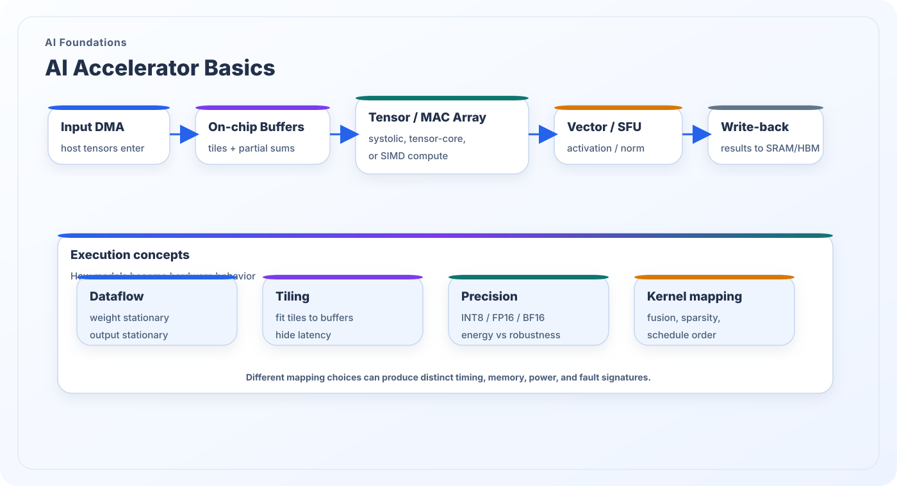

AI Accelerator Basics
AI accelerators are built to keep structured linear algebra running efficiently under strict bandwidth and energy constraints. Understanding matrix engines, dataflow, quantization, buffering, and workload mapping is essential for connecting model-level behavior to measurable hardware activity.
What this topic covers
At a high level, AI accelerators try to keep compute arrays busy while hiding memory latency. This leads to tiling, blocking, pipelining, operand reuse, and double-buffering. The arithmetic unit alone does not determine useful throughput; the balance of data movement, mapping, and scheduling does.
Security relevance appears once those mapping decisions become observable. Two models with similar mathematical graphs may trigger different timing, memory, power, or fault signatures because their kernels are fused differently, run at different precision, exploit sparsity differently, or stress the memory hierarchy in different ways.
Security significance
- Accelerator microarchitecture explains how AI kernels are physically realized on hardware.
- Dataflow and tiling choices shape observable behavior beyond the high-level model graph.
- Quantization and reduced precision alter both efficiency and fault sensitivity.
- Hardware-aware accelerator reasoning is necessary to interpret physical measurements correctly.

Execution building blocks
Most modern AI accelerators are variations on a few recurring implementation ideas.
Tensor or MAC arrays
Systolic arrays, tensor cores, and vector-MAC fabrics provide high-throughput linear algebra. They are efficient only when tiled data arrives in the right order and with sufficient reuse.
On-chip buffers and reuse windows
Local SRAM, accumulation buffers, and staging queues allow the accelerator to reuse weights, activations, or partial sums before spilling to slower memory. This is critical for both efficiency and side-channel interpretation.
Dataflow and kernel mapping
Weight-stationary, output-stationary, or row/column reuse patterns affect traffic volume, latency, and physical footprint. Mapping decisions often explain why one operator is much easier to identify than another.
Questions for security analysis
These questions help translate model intuition into implementation-aware analysis.
What is externally visible?
Can the attacker see service latency, memory traffic, thermal behavior, power traces, or hardware counters that correlate with tiling, fusion, sparsity, or precision?
Where are the fault targets?
Different components tolerate faults differently. MAC datapaths, accumulation buffers, DMA control, and post-processing units may each expose different failure modes.
How stable is the mapping?
A strong benchmark or defense must ask whether the same model maps consistently across runtimes, precisions, and firmware versions, or whether the observable signature shifts with the deployment stack.
Back to the research map
Return to the structured research overview or continue browsing the other AI foundations and AI security themes.